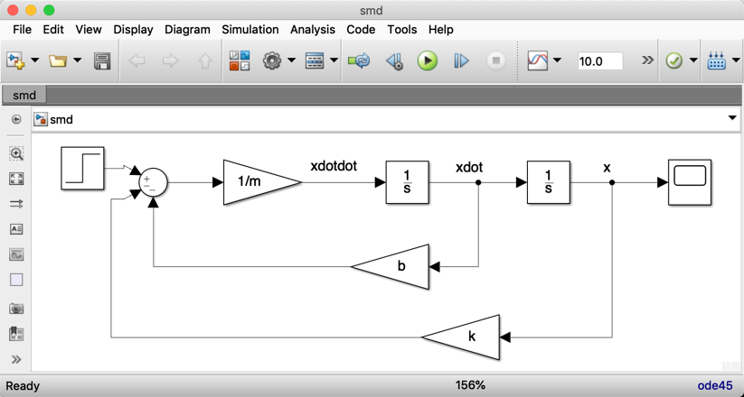

Lecturer
Set up MATLAB
cd matlab
pwd
clear all
format compact
then
$$F(s) = ms^2X(s) + bsX(s) + bX(s)$$%%file matlab/smd_params.m
%% SMD_PARAMS - define parameters for Spring Mass Damper (SMD) model
m = 1; % kg
b = 0.6; % Ns/m
k = 5; % N/m
smd_params
smd_tf = tf([1], [m b k])
step(smd_tf)


smd
In matrix form
$$\left[ {\begin{array}{*{20}{c}} {\dot {x}_1} \\ {\dot {x}_2} \end{array}} \right] = \left[ {\begin{array}{*{20}{c}} 0&1 \\ { - \frac{b}{m}}&{ - \frac{k}{m}} \end{array}} \right]\left[ {\begin{array}{*{20}{c}} {{x_1}} \\ {{x_2}} \end{array}} \right] + \left[ {\begin{array}{*{20}{c}} 0 \\ {\frac{1}{m}} \end{array}} \right]F$$A = [0 1; -k/m -b/m]; % state matrix
B = [0; 1/m]; % input matrix
C = [1 0]; % Output matrix - output y = x1
D = [0];
smd_ss = ss(A, B, C, D)
step(smd_ss)


smdcompare
"Which bit of this session did you find the most difficult to understand”
Use the Teams week 1 discussion to post feedback.
Background is extra topics, usually references to the recommended text or links to web resources, that are provided to amplify topics that are introduced in the other activities. You are expected to access these materials in your own time. For this chapter, the background reading is all from the Control Systems Wikibook.